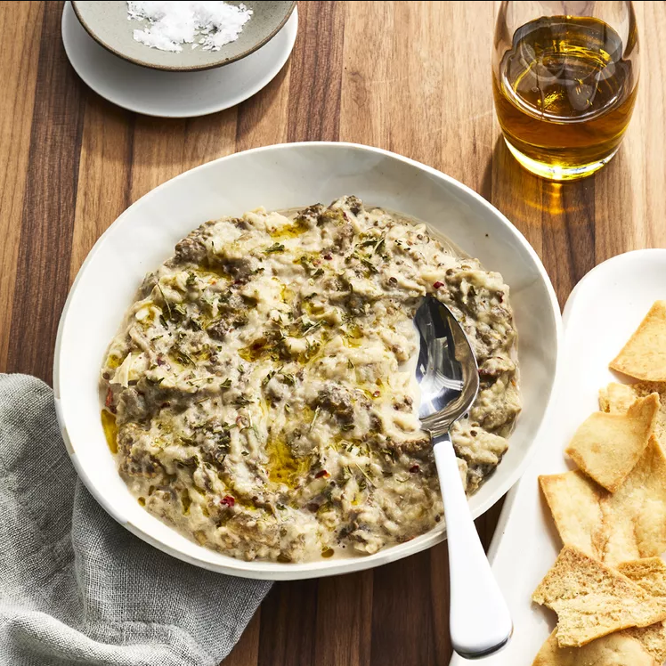

Traditional Baba Ghanoush

This is a traditional baba ghanoush recipe. This eggplant dip consists of baked eggplant with garlic, lemon juice, and tahini sauce. Dip in with some pita bread for a delicious, light appetizer.
Ingredients
- 1 large eggplant
- 4 cloves garlic, smashed
- 1 ½ tablespoons tahini sauce
- ½ medium lemon, juiced
- ½ teaspoon red pepper flakes (Optional)
- salt to taste
- 1 tablespoon olive oil, or to taste
- 1 pinch dried parsley flakes, for garnish
Steps
- Place one rack in the lower third of the oven and another one in the upper third. Preheat the oven to 400 degrees F (200 degrees C).
- Cut a shallow slit along the side of the eggplant and place into a baking dish.
- Roast on the lower rack of the preheated oven until eggplant is completely shrunken and soft, about 40 minutes. Move to the upper rack and continue baking until skin is charred, about 5 more minutes. Remove from the oven and let sit until cool enough to handle, 15 to 20 minutes.
- Peel and discard eggplant skin. Place eggplant flesh into a bowl; stir in garlic, tahini, lemon juice, pepper flakes, and salt until well combined. Drizzle olive oil over top and garnish with parsley.